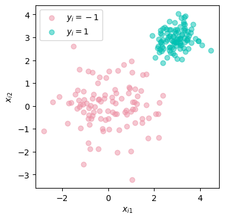

import numpy as np
from matplotlib import pyplot as plt
from hidden.perceptron import perceptron_update, draw_line
np.random.seed(123)
plt.rcParams["figure.figsize"] = (4, 4)
X1 = np.random.normal(0, 1, 100)
X2 = np.random.normal(0, 1, 100)
X3 = np.random.normal(0, 1, 100)*.5+3
X4 = np.random.normal(0, 1, 100)*.5+3
fig, ax = plt.subplots(1, 1)
def plot_scatter(X1, X2, X3, X4, ax, legend = True):
s = ax.scatter(X1, X2, color = "#ED90A4", alpha = 0.5, label = r"$y_i = -1$")
s = ax.scatter(X3, X4, color = "#00C1B2", alpha = 0.5, label = r"$y_i = 1$")
l = ax.set(xlabel = r"$x_{i1}$")
l = ax.set(ylabel = "$x_{i2}$")
if legend:
l = ax.legend()
plot_scatter(X1, X2, X3, X4, ax)
X = np.append(np.column_stack((X1, X2)), np.column_stack((X3, X4)), axis = 0) # feature matrix
y = 2*(np.arange(0, 200) >= 100) - 1 # target vector